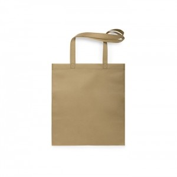

Em resumo
Ideias para integrar e reconhecer voluntários e apoiar campanhas, iniciativas culturais e atividades comunitárias. As famílias apresentadas são possibilidades a avaliar, não artigos obrigatórios.
Contexto em imagens

Destinatários e necessidades
Voluntários
Podem precisar de acolhimento, informação sobre a atividade ou identificação relacionada com a função.
Participantes e comunidade
A utilidade do material depende do objetivo, da acessibilidade da mensagem e do local de distribuição.
Equipas organizadoras
Podem precisar de materiais separados para preparação, coordenação e entrega ao público.
Ocasiões, locais e épocas
Integração ou reconhecimento de voluntários
A ocasião destina-se a voluntários e pode decorrer em contextos como sessão de acolhimento, ponto de encontro ou encerramento de atividade. O momento — ao longo do ano; datas definidas pela organização — ajuda a enquadrar o objetivo de agradecer ou apoiar a participação sem transformar o reconhecimento numa obrigação material.
Campanha de sensibilização
A ocasião destina-se a participantes e à comunidade e pode decorrer em contextos como rua, espaço comunitário, escola ou local da atividade. O momento — calendário definido pela organização e pela campanha — ajuda a enquadrar o objetivo de acompanhar uma mensagem clara e orientar a participação.
Iniciativa cultural ou atividade comunitária
A ocasião destina-se à comunidade, a voluntários e a equipas e pode decorrer em contextos como associação, recinto local, espaço público ou equipamento cultural. O momento — datas e locais variam por organização e localidade — ajuda a enquadrar o objetivo de facilitar acolhimento, identificação ou participação conforme a necessidade.
Dia Internacional dos Voluntários
A ocasião destina-se a voluntários e à comunidade e pode decorrer em contextos como atividade comunitária ou sessão da organização. O momento — 5 de dezembro, data anual assinalada pelas Nações Unidas Fonte — ajuda a enquadrar o objetivo de dar visibilidade ao contributo voluntário; a data não implica oferecer brindes.
Famílias de artigos a avaliar
Voluntários
Objetivo
Acolhimento e reconhecimento
Famílias a avaliar
Artigos de identificação, Material de
escrita, Têxteis identificativos
Participantes e comunidade
Objetivo
Informação e participação
Famílias a avaliar
Material informativo, Sacos, Artigos para
eventos
Equipas organizadoras
Objetivo
Coordenação local
Famílias a avaliar
Cadernos, Material de escrita, Sacos para
materiais da equipa
Utilização e distribuição
- Diferencie materiais de campanha, identificação de voluntários e ofertas aos participantes.
- Confirme que a mensagem é compreensível para o público e para o local onde será distribuída.
- Planeie o armazenamento, a entrega e o destino das sobras com a equipa organizadora.
- Se a iniciativa envolver outras entidades, confirme quem aprovou a mensagem e quem gere os materiais.
O que confirmar antes de escolher
- O que pretende alcançar: informar, acolher, identificar ou reconhecer?
- Quem deve receber o material e quem não precisa dele?
- A mensagem explica a ação sem exagerar o seu alcance ou prometer resultados?
- Há uma forma de participar sem receber um artigo?
- As famílias indicadas são possibilidades a avaliar e não substituem a decisão da organização.
Perguntas frequentes
É necessário oferecer algo para reconhecer voluntários?
Não. O reconhecimento pode assumir formas diferentes; escolha uma oferta apenas se for adequada ao objetivo e à decisão da organização.
O Dia Internacional dos Voluntários exige uma campanha ou oferta?
Não. 5 de dezembro é uma data de reconhecimento; qualquer atividade ou material é opcional e deve fazer sentido no contexto local.